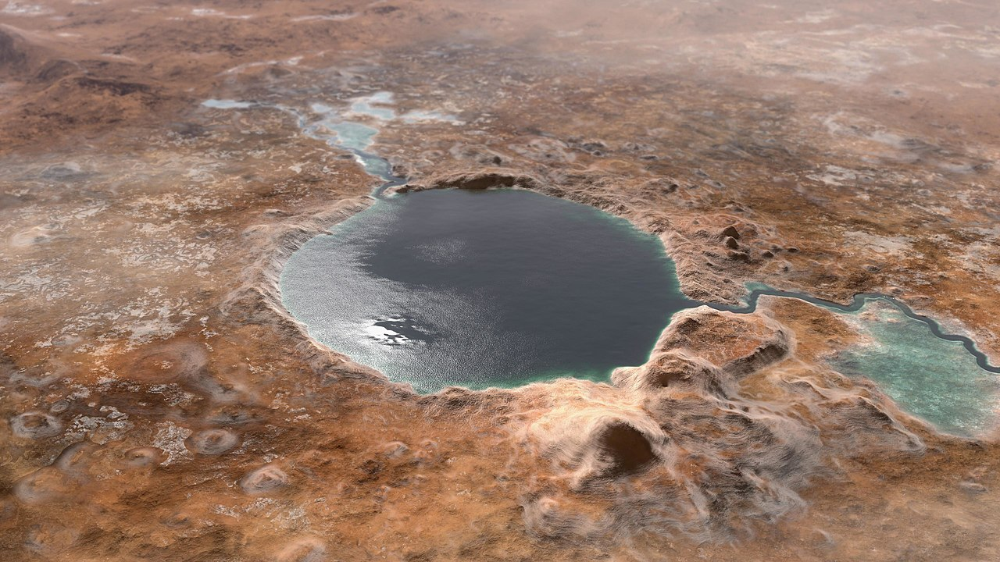
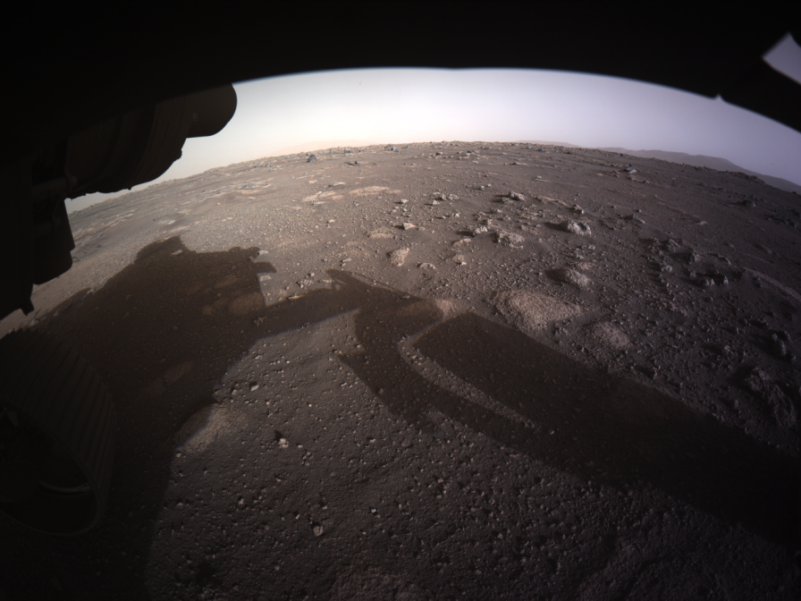
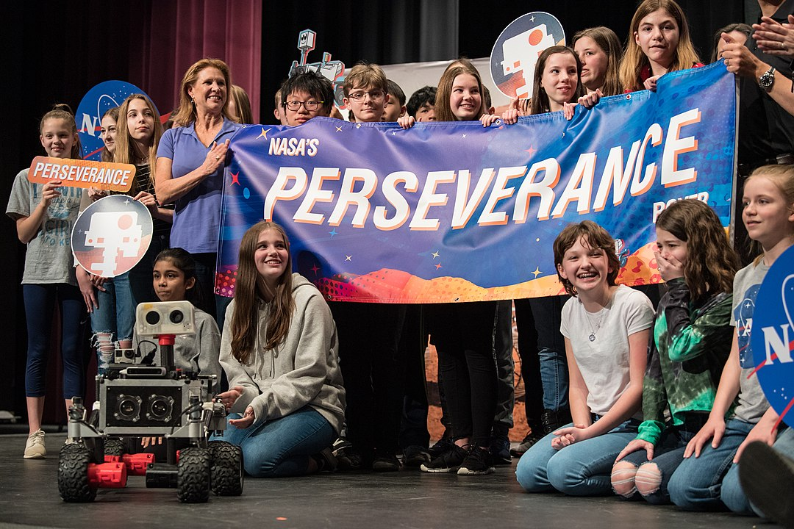

O misji
Nazwa misji: Mars 2020Czas wystrzelenia: 30 lipca 2020, 11:50 UTC
Miejsce wystrzelenia: CCSFS
Czas lądowania: 18 lutego 2021, 20:55 UTC
Miejsce lądowania: Krater Jezero
(18° 26′ 41″ N, 77° 27′ 3″ E)
Główny cel: poszukiwania życia
Koszt: 2,75 miliarda USD
Inna nazwa: Percy
Dane techniczne łazika
Długość: 2,9 mWysokość: 2,2 m
Moc: 110 W (0,15 KM)
Masa: 1 025 kg
Krater Jezero
Krater został wybrany jako cel misji ze względu na przeszłość geologiczną i dostępność różnorodnych skał. Średnica wynosi 47,5 km, dawniej prawdopodobnie był wypełniony wodą. Stąd jego nazwa, która w wielu językach oznacza jezioro.

Koncept artystyczny krateru Jezero

Pierwsze zdjęcie przesłane przez łazik z krateru
Cel misji
Głównym zadaniem łazika jest zbadanie dna krateru i ustalenie, czy mogło tam występować życie. W tym celu Perseverance będzie badał skały, które zachowują w sobie ślady przeszłości. Oprócz tego łazik ma sprawdzić, jak działa system produkcji zdatnego do oddychania powietrza z marsjańskiej atmosfery.Nazwa
Na nazwę łazika został ogłoszony konkurs wśród uczniów szkół podstawowych i średnich z całego świata. Do JPL wpłynęło ponad 28 tysięcy propozycji. Zwycięzca, Alexander Mather, został wraz z rodziną zaproszony do Kennedy Space Center na wystrzelenie łazika.Perseverance oznacza wytrwałość, co ma symbolizować zapał ludzkości do eksploracji czerwonej planety

Thomas Zurbuchen ogłaszający nazwę łazika